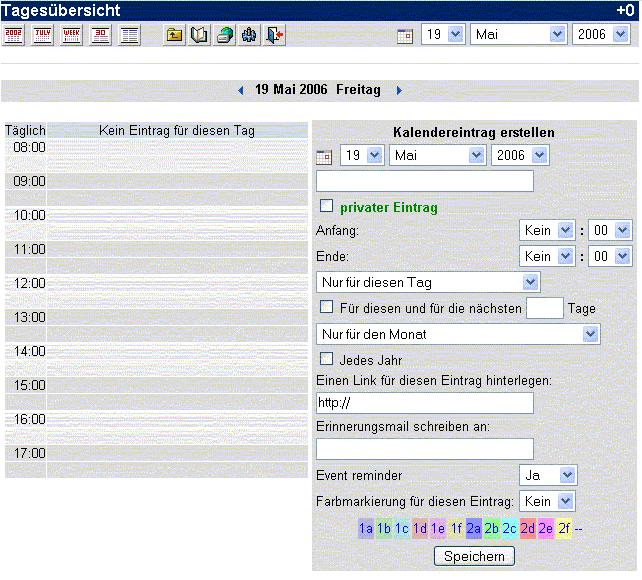

| Natürlich müssen Sie zum Verwenden des Kalenders neue
Einträge hinzufügen. Das ist einfach im Eingabebereich des
Tageskalenders möglich (Siehe
Vorherigen Eintrag
für nähere Informationen.). Das folgende Bild zeigt den Eingabebereich.

In diesem Bereich kann alles für einen Termin auf einmal eingegeben
werden. Es ist nicht nötig, in einen anderen Bereich zu wechseln. Das
macht die Eingabe einfach. Der Eingabebereich ist selbsterklärend, mit
ein wenig Erfahrung und Erklärung ist er wirklich einfach zu verwenden.
Um einen Termin einzugeben, schreiben Sie Ihren Erinnerungstext in das Textfeld Kalendereintrag erstellen. Wählen Sie den Zeitbereich aus Anfang,
bestehend aus Stunde und Minute und den Endzeitpunkt (AM-Vormittag und
PM Nachmittag). Wird keine Startzeit gewählt, erscheint der Termin ohne
bestimmte Zeit am Ende der Tagesansicht. Wird keine Endzeit gewählt,
hat der Termin einfach keine angegebene Dauer.
Wählen Sie nun, wie wie oft der Termin in diesem Monat wiederholt
werden soll. Soll der Termin nur an diesem speziellen Tag stattfinden,
belassen Sie die Standardeinstellung ("Nur an diesem Tag"). Andernfalls
findet der Termin an jedem gleichen Tag der Woche statt, an welchem er
eingetragen wird. Ist es beispielsweise Dienstag, bekommen Sie in dem
Menü nur die beiden Möglichkeiten "Jeden ersten Dienstag im Monat" und
jeden Dienstag im Monat.
Die Kalenderapplikation erlaubt die Wiederholung noch etwas
detaillierter. Sie können "Heute und die nächsten ___ Tage " wählen,
(wobei"___" ein Textfeld ist, in welches Sie eine Nummer eintragen
können), Das Textfeld kann die Anzahl der Wiederholungen enthalten.
Wollen Sie beispielsweise einen Termin von Montag bis Donnerstag
innerhalb einer Woche eintragen, wählen Sie den Montag, an dem der
Termin starten soll, und tragen Sie bei "Heute und die nächsten ___
Tage" eine 3 in das Textfeld ein.
Die Checkboxen ("Jeden Monat diesen Jahres " und "Jedes Jahr ")
erlauben einen Eintrag in diesen Abständen. "Jedes Monat dieses Jahres"
wiederholt den Eintrag jeden Monat. "Jedes Jahr " dupliziert den
Eintrag in jedem Jahr. Genau wie "Heute und die nächsten ___ Tage" wird
die Wiederholung nur eingetragen, wenn die entsprechende Checkbox
ausgewält wurde. Und natürlich können mehrere dieser Optionen
gleichzeitig ausgewählt werden.
Zusätzlich kann ein Link zu einer Webseite angegeben werden, um den
Termin zu verdeutlichen. Dies kann ein Link zu einer Webseite, zu einer
virtuellen Datei, oder einer physisch auf Ihrem Computer vorhandenen
Datei sein. Ist es ein Link zu einer Webseite, beginnt der Link mit http:// ,ist es ein Link zu einer Datei ,beginnt der Link mit file:///, dann der Pfad zu der Datei (Also z.B.: file:///c:/meine dokumente/Datei.ext).
Beachten Sie, dass - wenn der Link zu einer Datei auf Ihrem Computer
verweist - dieser Link nur auf Ihrem Computer funktioniert (es sei
denn, die Datei existiert auch auf einem anderen Computer an genau
derselben Position). Wollen Sie den Link auf jedem Computer erreichen,
sollte es ein Weblink, also beginnend mit http:// , sein.
In dem Feld unter Sende E-Mail Benachrichtigung an, können Sie eine Mailadresse angeben, an die automatisch eine Benachrichtigung geschickt wird, wenn der Termin ansteht.
Die Nachrichten Farbe ermöglicht es, Ihre Einträge
farblich hervorzuheben. Dies ermöglicht eine bessere Übersicht,
wenn man bestimmte Termine immer mit derselben Farbe einträgt, oder
Termine zu unterschiedlichen Zeitpunkten farblich von einander abheben
lässt. Dazu müssen Sie nur den entsprechenden Farbcode wählen .
Ist die Eingabe des Termins abgeschlossen, klicken Sie einfach auf
Speichern. Der Termin wird, inklusive eventueller Wiederholungen, in
den Kalender eingetragen.
Sie können bereits eingetragene Events jederzeit bearbeiten, indem
Sie das Bearbeitungssymbol des jeweiligen Eintrags klicken. Folgen Sie
den entsprechenden Anweisungen, sie sind dem Neueintragen eines Termins
sehr ähnlich. Das einzige, das nicht bearbeitet werden kann, sind
wiederholende Einträge. Ein kurzer Workaround ist es, den Eintrag
mittels [Löschen] zu entfernen und ihn erneut einzutragen. |